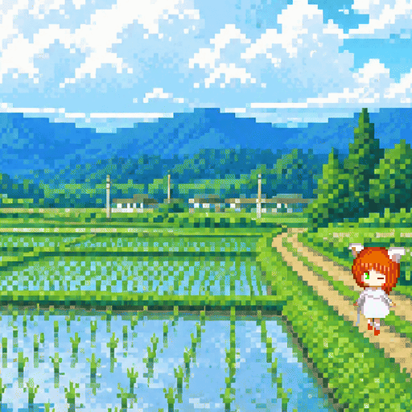
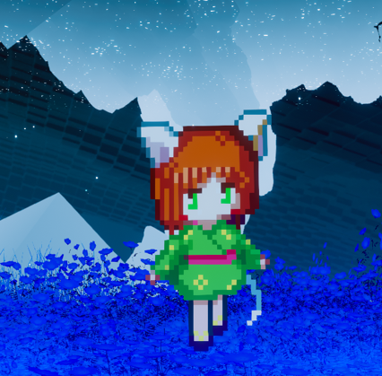
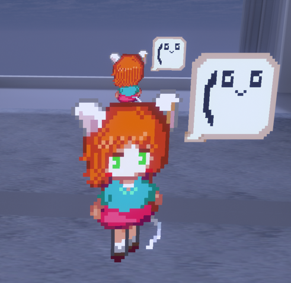
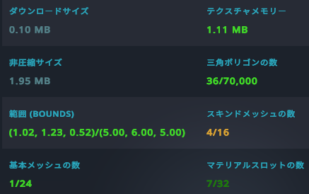

ドット絵で作った超軽量アバター第二弾！
掴んで引っ張ったり、しゃがむと猫に変身したり
動きもゲームっぽく見えるように工夫しています
今回はシェーダー自作したので少し自由度が増しました
こちらが完成したらめめこのほうも自作シェーダー入れて改良する予定
このシェーダー全然軽いのにQuestでは使わせてくれないらしい。
なんでかなー
| 対応 | PC |
| Unity2022 | アバター3.0 SDK |
| 価格 | 未定 |
| 公開予定 | 2026年7月25日 |


